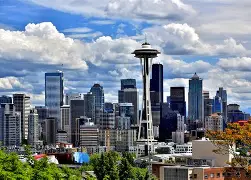

Put your favorite city here
Seattle lies on a narrow strip of land between the salt waters of Puget Sound and the fresh waters of Lake Washington. Beyond the waters lie two rugged mountain ranges, the Olympics to the west and the Cascades to the east. It is a city built on hills and around water, in a mild marine climate that encourages prolific vegetation and abundant natural resources.
